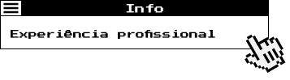

NTT DATA Europe & LATAM
-
 Análise de
requisitos e colaboração com equipes
internas e externas na produção de design e
arquitetura de softwares.
Análise de
requisitos e colaboração com equipes
internas e externas na produção de design e
arquitetura de softwares. - Revisão,
atualização, refatoração e depuração de
códigos TypeScript.
- Aprimoramento
de softwares existentes, migrando
de Angular 8 para NextJS.
- Codificação de
layout responsivo e criação de
componentes reutilizáveis utilizando
styled-components.
- Manutenção da
consistência entre os protótipos
apresentados pela equipe de UX ao desenvolver o
código do front-end pixel perfect.
- Utilização de
metodologias ágeis SCRUM/Kanban.
- Experiência em
projetos responsivos, adaptação
para dispositivos móveis e desktops utilizando
Bootstrap, CSS e a biblioteca ANT Design.
- Conhecimentos
básicos de GIT e linha de comando.
- Criação de
eventos de trackeamento e
monitoramento de cliques no Google Tag Manager.
Keywords
- Angular
- NextJS
- Google Tag Manager
- GitHub
- Slack
- Node.js
- styled-components
- Ant Design
- Angular Material
- HTML
- CSS
EXPERIÊNCIA FREELANCER
RECANTO DOS NOBRES
- Desenvolvimento
front-end de interfaces atraentes e funcionais
para sites.
- Configuração de
campanhas no Google Ads para
aumentar a visibilidade online e
atrair tráfego qualificado.
- Utilização do
Google Tag Manager para gerenciar
e rastrear eventos, conversões e
métricas essenciais
- Integração de
técnicas de SEO para otimizar o
desempenho dos sites em
mecanismos de busca
- Seleção e
configuração de serviços de hospedagem
web adequados para garantir o
desempenho e a segurança dos sites
Keywords
- HTML
- CSS
- Hospedagem
- SEO
- Google Tag Manager
- Google ADS
- Desenvolvimento
front-end de interfaces atraentes e funcionais
para sites.
- Configuração de
campanhas no Google Ads para
aumentar a visibilidade online e
atrair tráfego qualificado.
- Utilização do
Google Tag Manager para gerenciar
e rastrear eventos, conversões e
métricas essenciais
- Integração de
técnicas de SEO para otimizar o
desempenho dos sites em
mecanismos de busca
- Seleção e
configuração de serviços de hospedagem
web adequados para garantir o
desempenho e a segurança dos sites
Keywords
- HTML
- CSS
- Hospedagem
- SEO
- Google Tag Manager
- Google ADS
- Início -
copyright © Caroline Calixto